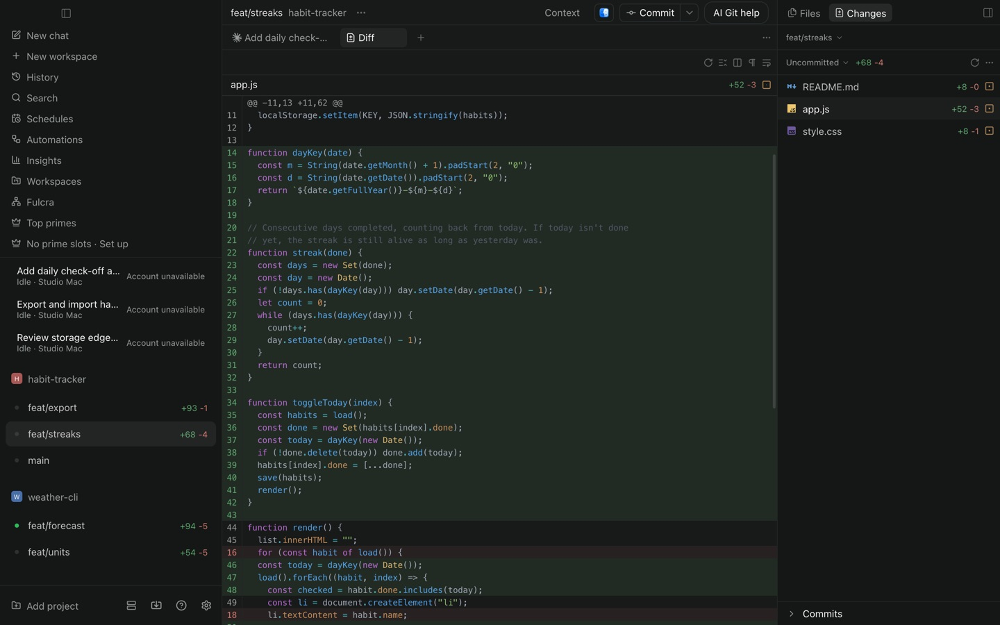
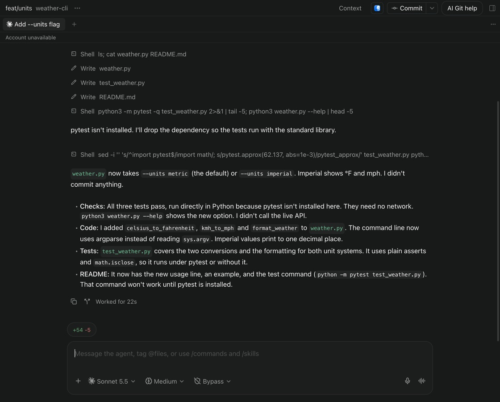
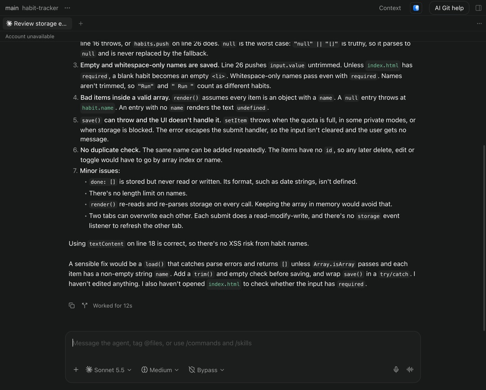
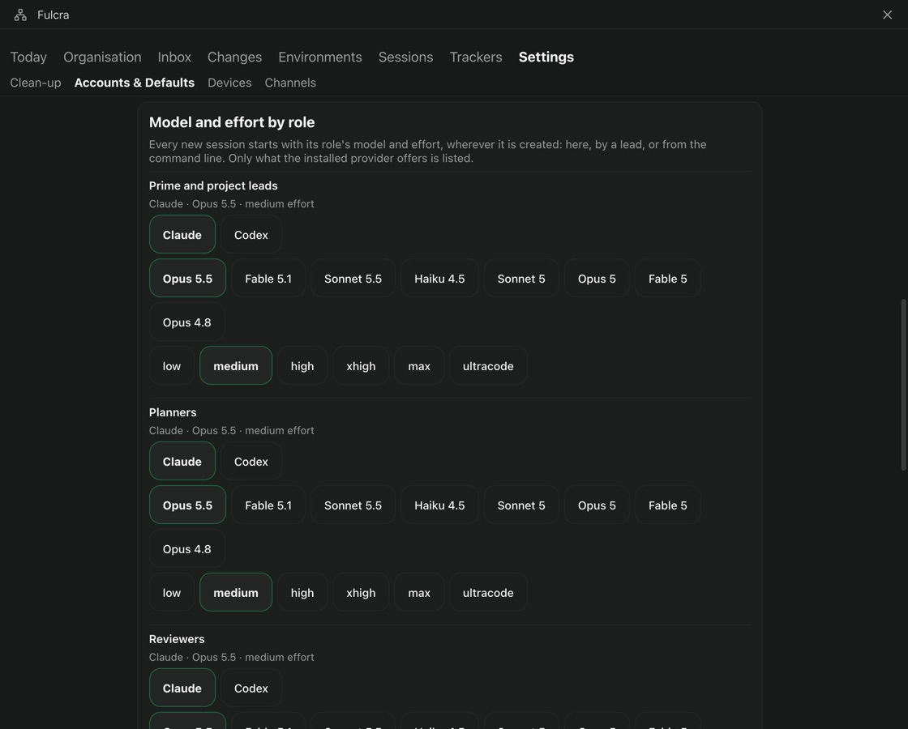

Run your AI team
across projects and devices.
Fulcra keeps your Claude Code and Codex sessions running on your Mac. Each one works in its own Git worktree, keeps its history and shows you exactly what it changed.

- Persistent sessionsClaude Code and Codex, history kept
- One worktree per taskParallel work that doesn't collide
- Runs on your MacYour code and sign-ins stay there
How it works
Give the goal. Check the result. Decide.
Every task goes through the same three steps. These are real screens from one demo project.
-
Hand a task to a session
Start a session on a new branch with one line. It gets its own worktree, so several can work on the same project at once. Pick Claude or Codex, the model, effort and permission mode for each session.

-
It checks its own work
Sessions run the code, take screenshots and tell you what they did and didn't test. The conversation stays with the branch, so you can pick it up tomorrow or from your phone.

-
Review before anything lands
Read the diff beside the chat, or ask another session for a second opinion. Nothing is committed until you say so.

Your team
You lead. Primes coordinate. Projects keep moving.
Instead of watching every chat, you talk to one or a few primes. Each project has a lead with its own tasks, sessions and messages. Decisions come back up to you.
Every role starts the way you set it
Choose the provider, model and effort for leads, planners, reviewers, implementers and research. New sessions pick it up wherever they start: in the app, from a lead or from the command line.
Add several Claude or Codex accounts and sessions carry on under the next one when an account reaches its usage limit. Tokens are kept in the Keychain.

Across devices
The work stays on the Mac. You don't have to.
Your Mac
The host. Sessions, worktrees, provider sign-ins and code live here, and keep running when you close the window.
Your phone
Pair an iPhone to read and answer the same chats while the Mac keeps working. For now you build the iPhone app yourself with Xcode.
Your other Macs
Connect the app to another Mac's host and lead its sessions from the same sidebar.

Get Fulcra
Fulcra is open source under Apache-2.0. There's no signed download yet, so you build it from source on a Mac with Apple silicon. It takes a few commands.
You'll need Node.js 24, the Xcode command-line tools and a signed-in Claude Code or Codex CLI. iPhone, Android and Windows guides are in the repository; Android and Windows are untested.